软件工程 Lab1 实验报告
姓名：刘人豪
学号：17307110112
实验过程
3.1 查收作业
对于Git，Java，Maven的安装过程，以及查收作业的过程，在这里就不再赘述了。
3.2 创建项目
首先，按照Lab1文档中的描述，在华为云中新建「Scrum」项目，并命名为「2020软件工程_Lab1_刘人豪_17307110112」。
将FudanSoft添加进项目中。
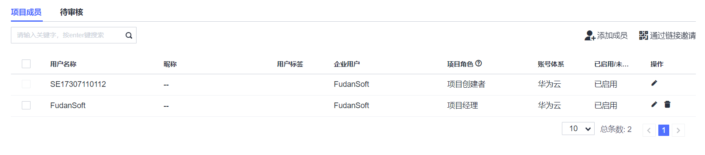
3.3 拉取代码
按照Lab1文档中的要求，将仓库拉取到本地。
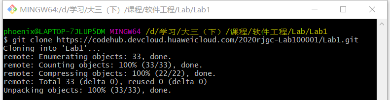
3.4 运行项目
按照Lab1文档中的要求，采用使用IDE运行的方法。
在IntelliJ IDEA中导入拉取到本地的仓库，
但是Maven并没有自动导入依赖包，并且使用File-Invalidate Caches/Restart并重启计算机不能解决问题。
解决方案如下：首先在File-Settings中，搜索“Maven”,然后将Maven home directory从Bundled(Maven 3)更换为如图所示的绝对路径。
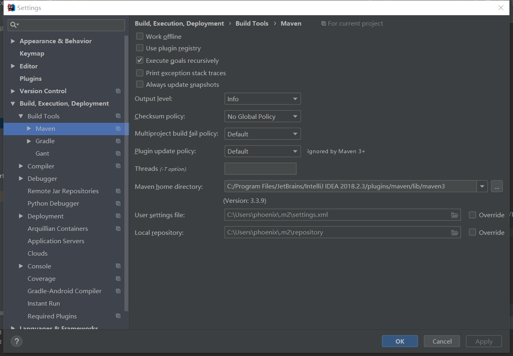
再在右侧边栏Maven Projects中先使用clean，再使用install，重新安装依赖包，问题解决。
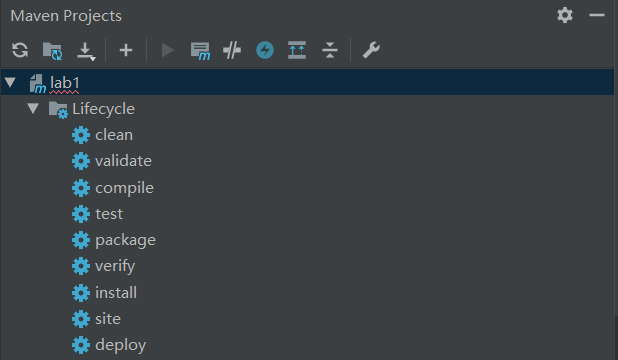
经过如上所述的操作后，可以成功运行本程序，此时打开“http://localhost:8080/”，打开页面如下。
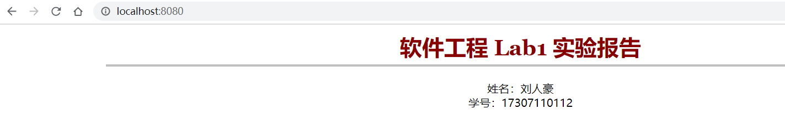
值得注意的是，为了防止因为共用同一台服务器的小组成员，使用maven打包出相同路径相同命名的jar包，使部署时发生覆盖，
需要将Lab1/pom.xml文件中的最后一段添加finalName标签，来指定jar包的名称，以避免冲突，如下图所示：
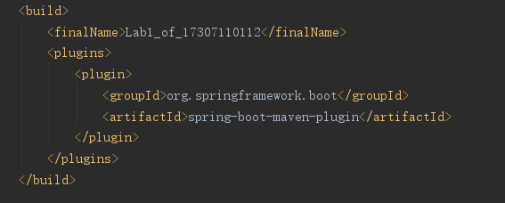
最终生成的jar包情况如下：
由于此段为后来添加，在下文中仍然采用最初的jar包进行展示。
3.5 DevCloud构建/发布
首先，按照TA所指导的步骤，建立主机组和主机。
随后在华为云-构建/发布-编译构建中，选择新建编译构建任务，选择Lab1源码仓库，使用Maven模板，jdk-1.8版本完成构建。
再在华为云-构建/发布-部署中，选择新建部署任务，选择SpringBoot应用部署模板，将部署步骤调整为如下图所示：
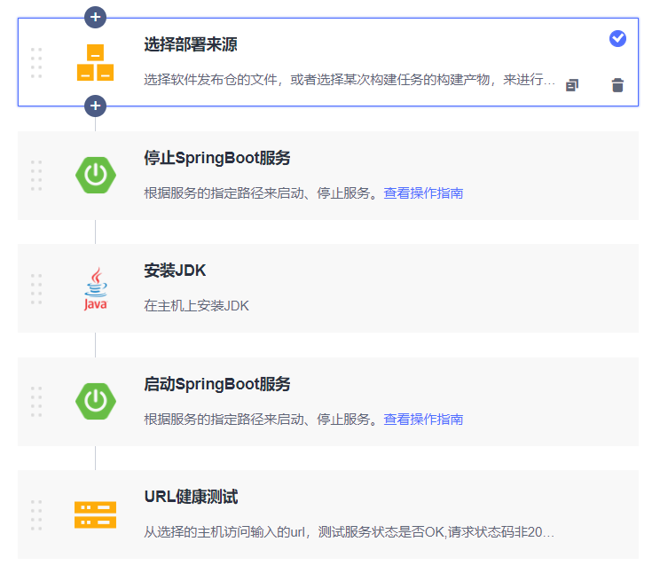
在选择部署来源步骤中填入如下设置，也即选择刚才编译构建的文件为软件包：
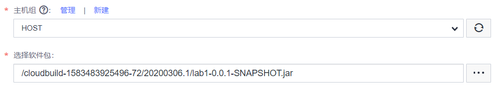
在安装JDK步骤中选择openjdk-1.8.0，在启动SpringBoot服务步骤中，将命令行参数设置为“--server.port=8084”，也即选择8084端口。
在URL健康测试步骤中，将测试路径设置为分配的服务器IP及端口，也即“http://114.115.150.198:8084”。
点击保存并执行，在弹出的“设定参数并执行”窗口中，选择主机组为之前新建的主机组“HOST”，在spring_path中填入服务器上软件包的绝对路径，也就是“/usr/local/lab1-0.0.1-SNAPSHOT.jar”，
在package_url中填入发布仓库中软件包的URL，也即“/cloudbuild-1583483925496-72/20200306.1/lab1-0.0.1-SNAPSHOT.jar”，最后填入服务器访问端口8084。
点击执行后，部署成功。
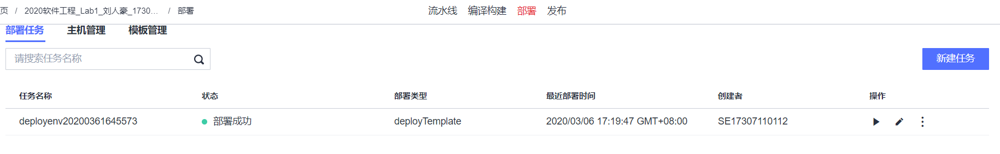
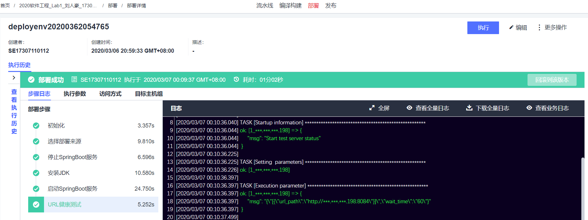
此时，通过IP地址“http://114.115.150.198:8084”访问，页面如下：
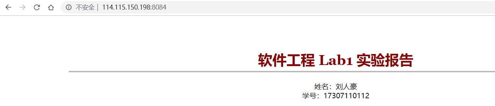
部署完成！
实验心得
通过这次实验，我对Git，Java的使用进行了复习，同时也对Maven以及SpringBoot框架的使用有了一定的了解。此外，我还初步理解了
如何使用华为云平台编译构建代码并进行部署。
在实验中，我也遇到了一些困难，在上文也对如何解决这些困难作了阐述。相信这些能够帮助我更好地掌握软件工程的学习内容。